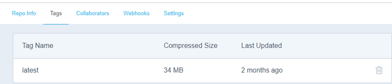

Within your course repository, create a directory "hw3". Commit and push to your remote repository.
cd <path_to_repo> mkdir hw3 touch hw3/Dockerfile.large touch hw3/Dockerfile.small touch hw3/screenshots.pdf git add hw3 git commit -m "initial commit for hw3" git push
hw2 and construct a container that employs Ubuntu 20.04 as a base Linux image. The command below should successfully build your container locally:docker build -f Dockerfile.large -t <dockerhub_id>/hw3large .hw2 and construct a container that employs a base Linux image that is as small as possible. Possible alternatives include Alpine, Busybox, and Minimal Ubuntu. Tips for shrinking containers can be found here, here, and here. The command below should successfully build your container locally.docker build -f Dockerfile.small -t <dockerhub_id>/hw3small .docker push <dockerhub_id>/hw3large
docker push <dockerhub_id>/hw3small
docker ps, docker stop, docker rm, and docker rmi. Then, use docker run to instantiate each of your container images on Docker Hub and ensure it maps the Ubuntu VM's port 8000 to the container's port 5000. Show the console output displaying the container image layers being pulled. Perform a wget to your container (e.g. http://localhost:8000) and show that it returns your landing page. hw3/screenshots.pdf. Add and push the file to your repository.The following rubric will be used to evaluate your homework submission:
Overall functionality (Dockerfiles, Docker Hub images) |
Screenshots as described in assignment included |
Instructions followed accurately including naming and submission of code |